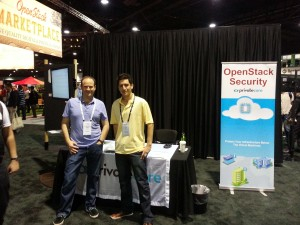

Threats
Linux Malware by the Numbers
Concrete security incident data is typically scarce for any operating system, but the challenge of finding useful data is even more acute for Linux environments. Some folks might even believe that there is no such thing as Linux malware, or that Linux is inherently secure / heterogenous / rare compared to Windows systems. Instead of going into a “why” discussion, I’d like to take a look at reports of actual incidents, describe those threats, and use the Windows malware experience to infer “what’s next” for Linux.

Alon Nafta
A key point to consider when looking at Linux malware is that it’s mostly targeting servers. When you compare threats to servers against those targeting client systems, the common exploitation vectors are typically different, in addition to heavy reliance on system administrators’ skill and meticulousness.
What were the major Linux malware incidents in recent years?
Here’s the data I collected for the last 3 or so years:
-
2011 kernel.org hacked, malware used was some variant of Phalanx, one of the better known Linux rootkits
-
2012 A Linux rootkit is caught in the wild, nicknamed Snakso (Here’s a blog post describing it)
-
2012 An iframe injection module is caught in the wild, nicknamed Chapro by Symantec, and later linked to the previously known Darkleech.
-
2012 Volatility released a nice analysis of a recent variant of Phalanx (dubbed Phalanx 2) caught that year
-
2014 Linux backdoors were found in the wild in large numbers. Because of the high volume, this was named Operation Windigo
-
2014 Darkleech is still seen in the wild in newer variants
Phalanx and Snakso are both kernel rootkits that use loadable kernel modules to execute kernel code, and various hooks to hide processes, files and network connections. All other used malware “userland” modules that patch existing binaries on the system and use various techniques to evade system administrators and external system audits.
How did malware get in?
Linux-running systems are primarily servers, meaning that common exploits targeting browsers (via drive-by attacks) or email clients and file readers (via spear phishing emails) are practically irrelevant. Yet all of these were presumably installed with root privileges, so how did they get in?
We can reasonably speculate that many servers suffer from bad configuration, exposed interfaces and shared SSH keys and credentials. Unpatched servers are also further exposed to publicly disclosed privilege escalation vulnerabilities, and obviously everyone is exposed to zero-days. Since in many cases numerous servers are managed by the same IT administrators, sysadmins are obvious targets for attackers (pdf) for acquiring targets nonlinearly.
These are small numbers compared to Windows incidents, why should this change?
Granted, the scale and complexity of these incidents is significantly inferior to what happened in the parallel world of Windows systems. However, we should take into account the following observations -
-
The technology barrier isn’t as high as previously thought, as demonstrated by last year’s disclosure of the (5-year old) NSA Tailored Access Operations (TAO) catalog. Moreover, many Windows malware capabilities can be ported to operate on Linux running systems, for example, using GRUB to retain persistence.
-
As data is moving from endpoints to outsourced servers and centralized server farms, we can expect (or fear) that the relative value of exploiting servers is rapidly increasing.
-
Linux server security relies almost exclusively on security-aware administration and capable administrators, since deployed third party security products are sparse. This leaves incredible room for human error and security gaps due to lack of technical aptitude or awareness.
Looking at the Crystal Ball: Malware and Linux
Linux systems and the Linux security landscape have experienced far less malware activity than its Windows counterpart, yet this very same reduced friction has a major impact, resulting in a relatively immature ecosystem. The Linux server environment lacks of easily deployed security solutions, third party security products (e.g. anti-malware) and requires high administration skills. These factors make it a relatively fertile field for malware.
While data and computation moves from endpoints to servers, the number of Linux servers holding sensitive data is on the rise and provides an attractive opportunity for malicious adversaries. The technology and tools used by nation-state actors will eventually make their way to cybercrime organizations, expanding their efforts and capabilities to target Linux systems.
Supply Chain Compromises in the News: From Scanners to Servers
Today’s breaking news uncovered by threat researchers at TrapX Security involves compromised firmware in handheld scanners being used to compromise corporate networks. The attack appears to have used sophisticated malware embedded in the mobile scanner firmware that subsequently targeted servers inside the enterprise. According to the Dark Reading article, “A Chinese manufacturer that sells the popular devices for scanning items shipped or transported apparently has been implanting the malware in its products”.

Todd Thiemann
This new report of a supply chain attack is something that the US Department of Defense (DOD) Defense Science Board warned about. What I find interesting in this particular attack is 1) the supply chain approach and 2) the sophistication (malware in the handheld scanners that then launched against servers).
This attack is in a similar vein to the NSA’s Tailored Access Operations (TAO) catalog of exploits. It is a matter of time before bad guys profit using techniques pioneered by sophisticated state actors (if they are not doing so already).
It is a small step for the attack technique using handheld scanners to be applied against servers. For example, a compromised NIC from China gets slotted into a server and exposes an organization’s sensitive data.
While today’s news involved handheld scanners, tomorrows news could involve other IT supply chain elements. Enterprises need to consider validating the integrity of the components coming through their IT supply chain. What can a savvy IT security person do to avoid these sorts of threats going against server infrastructure? As Gartner analyst Joerg Fritsch and Mario DeBoer highlighted in recent research, you need to validate server integrity to bootstrap trust as well as consider runtime security controls.
OpenStack Summit May 2014 – Security Insights

Oded Horovitz
What an exciting event! This was my first time participating in the OpenStack Summit series, and the May 2014 summit was located in hot and rainy Atlanta
GA left me with sense of being part of something big, and a strong desire to participate in the upcoming event (and not just because of the Paris location). As you entered the event, you could see the sponsor wall proudly presenting PrivateCore among many great OpenStack companies.

The show floor was very busy, and the casual dress code suggested this is going to be a fun event, where I would get my fair share of geeking out time. As you can read below, I wasn’t disappointed.
OpenStack is a growing force as indicated by the bi-annual user-survey. And the survey tracks Dev/QA, PoC, and Production deployment stages independently. Thank you OpenStack community for some great information!
Lets talk Security
Being a founder of a security company, I have a slight security bias, and the first two days offered a wealth of security-related talks. Below are some notes that I thought might be interesting to PrivateCore blog readers.
Russell Haering talk on Multi-Tenant Bare Metal Provisioning with Ironic triggered a set of question around firmware security. The problem presented by several attendees is the following: “how could one detect or prevent a bare metal tenant attempt to reflash the BIOS firmware or any other IO-device firmware?”. My best recommendation for detecting firmware updates that will run on the main CPU is to take advantage of the Trusted Platform Module (TPM) chip on your servers to validate the firmware before any sensitive data touches the server. Our vCage Manager can be of help here. As for IO-device firmware, unfortunately, the answer is not as simple, and my design assumption is assume these IO-devices as malicious, and build your stack to defend against them.
Next was the Bryan D Payne talk on Security for Private OpenStack clouds. The talk was more of an open discussion with OpenStack operators rather than a presentation, providing the opportunity to hear back from the community about their best practices. What caught my attention was a comment from one of the security operators at Yahoo. His claim (if I understood correctly) was that they assume every guest VM will be compromised. So far no big news. Then he added that they assume compromised guest VMs will successfully escape to the hypervisor. Now that is some bold statement. Later he explained to me that through Nova message signing, even compromised hypervisors do not have much of a say on their Control Plane. Unfortunately, our conversation was interrupted, and I was left without understanding the full architecture, I hope to catch up with him back in the Bay Area.
While walking the expo floor I had a chance encounter at the demo theater with an interesting technology from HGST.  As you can see, HGST is working on an open architecture, turning a hard-disk into a Linux server. The hard-disk has a dedicated CPU, memory and ethernet port. It runs Linux, and allows applications such as distributed file-system to run directly on the disk, saving CPU cycles, and all related trips on the server bus. My interest in this advancement relates to the possibility of turning this into an “hardware implant for script-kiddies”. In my blog earlier this year, I touched on a leaked NSA software implant called IRATEMONK – a firmware implant affecting many vendor hard-disk controllers, and allowing a stealthy MBR code injection. With the new work from HGST, anyone capable of writing a Linux application will likely be able to do the same. Technology innovation frequently happens without considering the security implications.
As you can see, HGST is working on an open architecture, turning a hard-disk into a Linux server. The hard-disk has a dedicated CPU, memory and ethernet port. It runs Linux, and allows applications such as distributed file-system to run directly on the disk, saving CPU cycles, and all related trips on the server bus. My interest in this advancement relates to the possibility of turning this into an “hardware implant for script-kiddies”. In my blog earlier this year, I touched on a leaked NSA software implant called IRATEMONK – a firmware implant affecting many vendor hard-disk controllers, and allowing a stealthy MBR code injection. With the new work from HGST, anyone capable of writing a Linux application will likely be able to do the same. Technology innovation frequently happens without considering the security implications.
{kind=link}
The Marketplace
As sponsors of the event we had a space to present our warez, and had many lively discussions with the summit crowd. To my pleasant surprise, most attendees we spoke with understood TPMs, Intel Trusted Execution Technology (Intel TXT) and general Trusted Computing concepts. This resulted in lots of deep discussions about implementation of the technology in their environment – the OpenStack crowd understood the value of system integrity controls that PrivateCore brings to OpenStack.
{kind=link}
Peek into PrivateCore roadmap
If you had a chance to join Keith Basil TripleO talk, you should have noticed the slide  showcasing PrivateCore’s technology integration into OpenStack on OpenStack (TripleO). We have not publicly shared details of integration, but if you are interested learning how trusted computing plays directly into cloud deployment and management, please get in contact with us for a preview.
showcasing PrivateCore’s technology integration into OpenStack on OpenStack (TripleO). We have not publicly shared details of integration, but if you are interested learning how trusted computing plays directly into cloud deployment and management, please get in contact with us for a preview.
See you all at November’s OpenStack Summit in Paris!
Gartner Report Illuminates Server Security
Gartner’s analysts Joerg Fritsch and Mario de Boer published a comprehensive report covering server security on 31 March 2014 titled “The Feasibility of Host-Based Controls and the Evolution of Server Security”. This report (G00260437) is a tour de force on all aspects of physical and virtual server security – if you are in the business of securing enterprise server infrastructure, you should get ahold of it and spend some quality time digesting it. This report is a great example of the value of a Gartner IT Pro service subscription.
Todd Thiemann
The report is holistic and touches on all aspects of server security, including anti-malware (AV), host-based intrusion prevention (IDS/IPS), application whitelisting, file integrity monitoring (FIM), privileged account monitoring and server integrity.
Something that we are proud of is the recognition given to PrivateCore vCage Manager as a leading solution for bootstrapping trust in private and public clouds. As Gartner states in the report, “…bootstrapped trust comes in with a very moderate price tag, or it could even be a feature of products that are already deployed in the local data center, such as the HyTrust appliance, PrivateCore vCage Manager or OpenStack.”
Reading between the lines, I suspect the recent news regarding NSA’s Tailored Access Operations (TAO) unit is motivating more focus on system integrity. As Oded pointed out in his January blog post, bad guys will eventually learn from the NSA TAO techniques for illicit gain. The Gartner Server Security report lays out best practices in securing such systems. As you look to implement such best practices described by Gartner, have a chat with us about maintaining Linux/OpenStack system integrity with PrivateCore vCage.
Don’t Forget Your Encryption Keys in Memory
A recent Volatility Labs post by Michael Ligh entitled “TrueCrypt Master Key Extraction and Volume Identification” discusses how the memory forensics framework Volatility can extract TrueCrypt disk encryption keys from captured memory. Attackers able to extract these keys would be able to decrypt TrueCrypt-encrypted volumes and recover supposedly secure data at-rest.

Steve Weis
This is not a TrueCrypt-specific issue, but rather applies to any memory contents including encryption keys, digital certificates, or sensitive data such as credit card numbers. An attacker able to access memory, either via software vulnerabilities or through physical extraction, can recover these memory contents.
When it comes to physical attacks to extract memory, such as the “Cold Boot Attack”, one countermeasure is full-memory encryption. By fully encrypting contents of memory, even an attacker able to extract memory through physical attacks would only see encrypted ciphertext.
PrivateCore vCage is the only commercially available system that fully encrypts memory on commodity x86 systems. Contact us to understand the issue or explore how vCage can help protect your memory, particularly your data-at-rest encryption keys.
Preventing the Next Target* Breach with Trusted Computing
* Replace Target with your favorite retail chain.
Alon Nafta
The recent news that Target, Neiman Marcus and perhaps three other retailers suffered breaches involving large volumes of data pilfered is raising concerns among retail security professionals. While details are sketchy and there are plenty of unknowns, it appears that “memory scraping” (also called “RAM scraping”) malware might have played a part in the compromise. There is plenty of research and alerts around memory scraping malware found here, here and here. This sort of malware has been around a while – check out this Dark Reading article from 2009 and this 2009 Verizon Data Breach Investigations piece.
What is memory-scraping malware? What we have seen to date has affected retail point-of-sale (POS) systems and potentially backend systems that are processing various types of payment cards (credit cards, debit cards, prepaid cards, etc.). While standards like the Payment Card Industry Data Security Standard (PCI DSS) call for encrypting cardholder information while at rest (storage) and in transit (in motion on the network), cardholder information is typically unencrypted while in use (memory). If you can access the POS system or server memory, you can extract its contents including the cardholder information.
The data format of such information is clearly defined (see ISO/IEC 7813 and 7816), so attackers can simply implement suitable algorithms in malware which is then installed on the POS machines to harvest cardholder information in memory with those formats in mind.
How can you protect against this sort malware? Antivirus is certainly a necessary component required by PCI DSS for systems handling cardholder information, but AV has been demonstrated to be less than effective in stopping sophisticated threats and updating AV on isolated networks is cumbersome.
One promising countermeasure is attestation. Attestation protects against persistent malware on immutable, “gold” base software images, and ensures – using cryptographic principles and components – that both hardware and software are unchanged. Attesting to the integrity of server and POS systems would validate that the machine (hardware and software) is clean of malware. If a machine was infected, it would fail attestation and could be examined and remediated. Proper attestation supported by strong cryptography would eliminate any chance for otherwise undetected malware persisting.
Naturally, there could be some infection that occurs after attestation that could exploit vulnerabilities, but periodically attested systems (which would typically require a reboot) minimize this window of vulnerability (or opportunity, depending on your perspective). In this situation, malware could infect a machine after it was attested in a known, good state, but that malware would be wiped away the moment the system reboots and that would be validated when the system re-attests.
A normal, stateful machine suffers from malware that can use its hard-drive, or other components, to persist. A stateless machine that relies on a locked-down, base software image and is periodically attested avoids malware that might try burrow its way into a stateful component. POS systems, as well as transaction processing backend systems, are not intended to run arbitrary code. Validating (attesting) such systems against a known, good software image would dramatically reduce the window of opportunity for attackers.
Security measures typically require some change in technology and processes. One change of periodically attesting systems is that it would require downtime as systems reboot and applications restart. The impact of this change could be minimized by rebooting during off hours for POS machines and this could be done in a round-robin fashion among a high-availability (HA) server cluster for mission-critical servers. POS systems are natural candidates for being stateless as they handle stateless data.
No security countermeasure is going to stop all attacks all the time – technology is extremely complex and attackers are very clever. While details of the exact circumstances around the breaches at Target, Neiman Marcus, and other retailers are still unknown, my speculation is that attesting systems would have reduced the chance of a successful attack and minimized the damage of any successful attack by reducing the attack duration.
2014 Prediction: Smart Cyber Criminals Learn From NSA “Software Implants”
Happy New Year and welcome to 2014! We are off to a rip-roaring start with news of the NSA’s exploit techniques. Following on Der Spiegel’s revelations about the US National Security Agency (NSA) Tailored Access Operations (TAO) group, the new year brought with it news of specific tools used by the NSA Advanced Network Technology (ANT) division detailed in the catalog of exploits described by Der Spiegel and Wired.
Oded Horovitz
While there is not much enterprises can do to counter the NSA going after a specific target (if they want your sensitive data, they will find a way to get it), the more worrisome issue is the criminal community digesting the news and learning from the masters of system penetration. You can expect that techniques described in the NSA ANT catalog will soon be used by the hacker community to create similar exploits.
As mentioned in Todd’s earlier blog post, the NSA technologists have designed their exploits for persistence and use the system BIOS as a launching pad. These bootkits (referred to as “software implants” in the NSA catalog) are the first thing to load when a system starts and can lock themselves into a privileged background process called “System Management Mode” (SMM) from which they can passively inspect data, or actively inject payloads into the running operating system or hypervisor. Some examples of the NSA persistent software implant approach include:
DEITYBOUNCE (highlighted in Bruce Schneier’s blog) and IRONCHEF (also highlighted in Bruce Schneier’s blog) exploit the x86 server BIOS and utilizing SMM to drop their payloads.
{kind=link}
{kind=link}
IRATEMONK infects the firmware on a common HDD controller, and performs a Man-in-the-Middle (MITM) attack to inject code into the Master-Boot-Record (MBR) of the system on the fly at boot time.
I founded PrivateCore knowing that these sorts of weaknesses existed in today’s computing infrastructure, and anticipating that hackers will take advantage of these weakness to gain data access and system control. Now that the NSA catalog is out in the open, we have evidence that indeed these weaknesses are being exploited in the wild.
PrivateCore vCage counters all of the BIOS threats to servers described in the NSA catalog. Why can I make such a broad claim? We protect servers with some foundation technology: validating the integrity of x86 servers with remote attestation to counter BIOS infection trying to fly under the radar. We follow the motto of “verify then trust” when it comes server integrity. Infected BIOS? Infected MBR? We’ve got our eyes on you! This video describes how PrivateCore vCage does this in an OpenStack environment.
The NSA ANT catalog is dated 2008 so how come we never heard about a breach using these exploits? If I would have to guess, the NSA has been very diligent in using these tools in a pin-point fashion to go after specific targets. Criminals on the other hand, will not be as discriminating or precise, and you should expect more widespread use of these techniques.
While techniques described in the NSA ANT catalog were previously in the realm of well-funded state actors, you can expect them to come to a server near you as they become commonplace tools of criminal actors. Verifying (rather than taking for granted) the integrity of your compute infrastructure and having measures in place to counter these sorts of persistent threats will enable you to have a better night’s sleep in 2014.